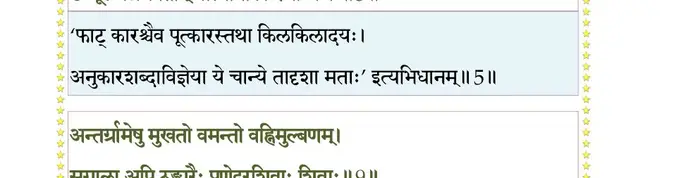
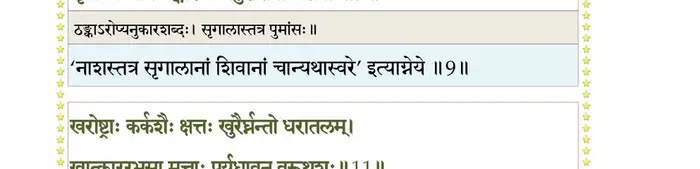
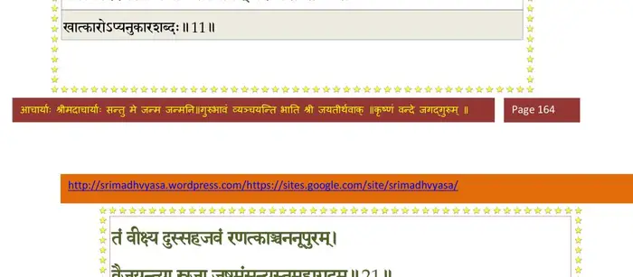
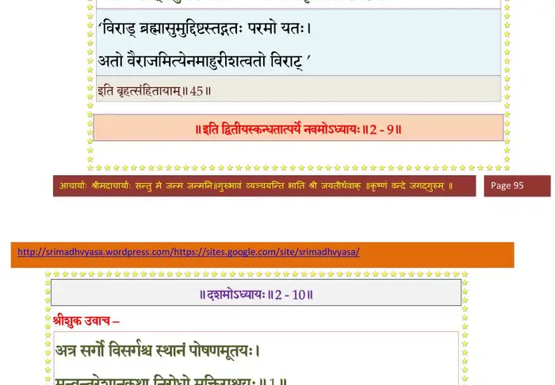
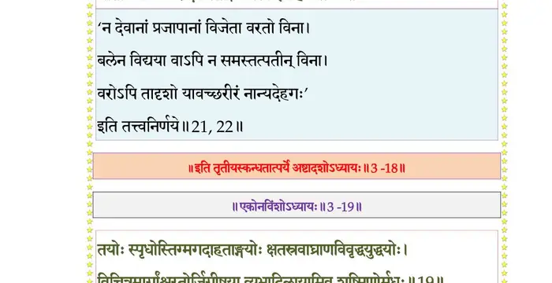

स्कन्ध 3 · अध्याय 18
श्लोक १
मैत्रेय उवाच–
निशम्यात्मभुवा गीतं कारणं शङ्कयोज्झिताः ।
ततः सर्वे न्यवर्तन्त त्रिदिवाय दिवौकसः।। १ ।।
निशम्यात्मभुवा गीतं कारणं शङ्कयोज्झिताः ।
ततः सर्वे न्यवर्तन्त त्रिदिवाय दिवौकसः।। १ ।।
श्लोक २
दितिस्तु भर्तुरादेशादपत्यपरिशङ्किनी ।
पूर्णे वर्षशते साध्वी पुत्रौ प्रसुषुवे यमौ।। २ ।।
पूर्णे वर्षशते साध्वी पुत्रौ प्रसुषुवे यमौ।। २ ।।
श्लोक ३
उत्पाता बहवस्तत्र निपेतुर्जायमानयोः ।
दिवि भुव्यन्तरिक्षे च लोकस्य च भयावहाः।। ३ ।।
दिवि भुव्यन्तरिक्षे च लोकस्य च भयावहाः।। ३ ।।
श्लोक ४
सहाचला भुवश्चेलुर्दिशः सर्वाः प्रजज्वलुः ।
सोल्काश्चाशनयः पेतुः केतवश्चार्तिहेतवः।। ४ ।।
सोल्काश्चाशनयः पेतुः केतवश्चार्तिहेतवः।। ४ ।।
श्लोक ५
ववौ वायुः सुदुस्पर्शः फट्काराराववान् मुहुः ।
उन्मूलयन् नगपतीन् वात्यानीको रजोध्वजः।। ५ ।।
उन्मूलयन् नगपतीन् वात्यानीको रजोध्वजः।। ५ ।।
भागवततात्पर्यनिर्णय

श्लोक ६
उल्लसत्तडिदम्भोदघटया नष्टभागणे ।
व्योमि्न प्रविष्टतमसा न स्म व्यादृश्यते पदम्।। ६ ।।
व्योमि्न प्रविष्टतमसा न स्म व्यादृश्यते पदम्।। ६ ।।
श्लोक ७
चुक्रोश विमना वार्धिरुदूर्मिक्षुभितोदरः ।
सोदपानाश्च सरितश्चुक्षुभुः शुष्कपङ्कजाः।। ७ ।।
सोदपानाश्च सरितश्चुक्षुभुः शुष्कपङ्कजाः।। ७ ।।
श्लोक ८
मुहुः परिधयोऽभूवन् सराह्वोः शशिसूर्ययोः ।
निर्घातरवनिहर्ृादा विवरेभ्यः प्रजज्ञिरे।। ८ ।।
निर्घातरवनिहर्ृादा विवरेभ्यः प्रजज्ञिरे।। ८ ।।
श्लोक ९
अन्तर्ग्रामेषु मुखतो वमन्त्यो वह्निमुल्बणम् ।
सृगाला अपि टङ्कारैः प्रणेदुरशिवाः शिवाः।। ९ ।।
सृगाला अपि टङ्कारैः प्रणेदुरशिवाः शिवाः।। ९ ।।
भागवततात्पर्यनिर्णय

श्लोक १०
संगीतवद् रोदनवदुन्नमय्य शिरोधरान् ।
व्यमुञ्चन् विविधा वाचो ग्रामसिंहास्ततस्ततः।। १० ।।
व्यमुञ्चन् विविधा वाचो ग्रामसिंहास्ततस्ततः।। १० ।।
श्लोक ११
खरोष्ट्राः कर्कशैः क्षत्तः खुरैर्घ्नन्तो धरातलम् ।
खात्काररभसा मत्ताः पर्यधावन् वरूथशः।। ११ ।।
खात्काररभसा मत्ताः पर्यधावन् वरूथशः।। ११ ।।
भागवततात्पर्यनिर्णय

श्लोक १२
रुद(व)न्तो रासभत्रस्ता नीडादुदपतन् खगाः ।
घोषेऽरण्ये च पशवः शकृन्मूत्रमकुर्वत।। १२ ।।
घोषेऽरण्ये च पशवः शकृन्मूत्रमकुर्वत।। १२ ।।
श्लोक १३
गावोऽत्रसन्नसृग्दोहास्तोयदाः पूयवर्षिणः ।
व्यरुदन् देवलिङ्गानि द्रुमाः पेतुर्विनाऽनिलम्।। १३ ।।
व्यरुदन् देवलिङ्गानि द्रुमाः पेतुर्विनाऽनिलम्।। १३ ।।
श्लोक १४
ग्रहान् पुण्यतमानन्ये भगणाश्चपि दीपिताः ।
अतिचेरुर्वक्रगत्या युयुधुश्च परस्परम्।। १४ ।।
अतिचेरुर्वक्रगत्या युयुधुश्च परस्परम्।। १४ ।।
श्लोक १५
दृष्ट्वाऽन्यांश्च महोत्पातान् नतत्तत्त्वविदः प्रजाः ।
ब्रह्मपुत्रानृते भीताः मेनिरे विश्वसम्प्लवम्।। १५ ।।
ब्रह्मपुत्रानृते भीताः मेनिरे विश्वसम्प्लवम्।। १५ ।।
भागवततात्पर्यनिर्णय

श्लोक १६
तावादिदैत्यौ सहसा व्यज्यमानात्मपौरुषौ ।
ववृधातेऽश्मसारेण कायेनाद्रिपती इव।। १६ ।।
ववृधातेऽश्मसारेण कायेनाद्रिपती इव।। १६ ।।
श्लोक १७
दिविस्पृशौ हेमकिरीटकोटिभिर्निरुद्धकाष्ठौ स्फुरदङ्गदैर्भुजैः ।
गां कम्पयन्तौ चरणैः पदे पदे कट्या सुकाञ्च्यार्कमतीत्य तस्थतुः।। १७ ।।
गां कम्पयन्तौ चरणैः पदे पदे कट्या सुकाञ्च्यार्कमतीत्य तस्थतुः।। १७ ।।
श्लोक १८
प्रजापतिर्नाम तयोरकार्षीद् यः प्रक् स्वदेहाद् यमयोरजायत ।
तं वै हिरण्यकशिपुं विदुः प्रजाः यं तं हिरण्याक्षमसूत सा ततः।। १८ ।।
तं वै हिरण्यकशिपुं विदुः प्रजाः यं तं हिरण्याक्षमसूत सा ततः।। १८ ।।
श्लोक १९
चक्रे हिरण्यकशिपुर्दोर्भ्यां ब्रह्मवरेण च ।
वशे सपालान् लोकांस्त्रीनकुतोमृत्युरुद्धतः।। १९ ।।
वशे सपालान् लोकांस्त्रीनकुतोमृत्युरुद्धतः।। १९ ।।
श्लोक २०
हिरण्याक्षोऽनुजस्तस्य प्रिायः प्रीतिकृदन्वहम् ।
गदापाणिर्दिवं यातो युयुत्सुर्मृगयन् रणम्।। २० ।।
गदापाणिर्दिवं यातो युयुत्सुर्मृगयन् रणम्।। २० ।।
श्लोक २१
तं वीक्ष्य दुःसहजवं रणत्काञ्चननूपुरम् ।
वैजयन्त्या स्रजा जुष्टमंसन्यस्तमहागदम्।। २१ ।।
वैजयन्त्या स्रजा जुष्टमंसन्यस्तमहागदम्।। २१ ।।
भागवततात्पर्यनिर्णय
श्लोक २२
मनोवीर्यमहोत्सिक्तमधृष्यमकुतोभयम् ।
भीता निलिल्यिरे देवास्तार्क्ष्यत्रस्ता इवाहयः।। २२ ।।
भीता निलिल्यिरे देवास्तार्क्ष्यत्रस्ता इवाहयः।। २२ ।।
भागवततात्पर्यनिर्णय

श्लोक २३
स वै तिरोहितान् दृष्ट्वा सहसा स्वेन दैत्यराट् ।
सेन्द्रान् देवगणान् क्लीबानपश्यद् व्यनदद् भृशम्।। २३ ।।
सेन्द्रान् देवगणान् क्लीबानपश्यद् व्यनदद् भृशम्।। २३ ।।
श्लोक २४
ततो निवृत्तः क्रीडिष्यन् गम्भीरं भीमनिस्वनः ।
विजगाहे महासत्त्वो वार्धिं मत्त इव द्विपः।। २४ ।।
विजगाहे महासत्त्वो वार्धिं मत्त इव द्विपः।। २४ ।।
श्लोक २५
तस्मिन् प्रविष्टे वरुणस्य सैनिकाः यादोगणाः सन्नधियः ससाध्वसाः ।
अहन्यमाना अपि तस्य वर्चसा प्रधर्षिता दूरतरं प्रदुद्रुवुः।। २५ ।।
अहन्यमाना अपि तस्य वर्चसा प्रधर्षिता दूरतरं प्रदुद्रुवुः।। २५ ।।
श्लोक २६
स वर्षपूगानुदधौ महाबलश्चरन् महोर्मीः श्वसनेरिता मुहुः ।
गुर्व्याऽभिजघ्ने गदया विभावरीमासेदिवांस्तात पुरं प्रचेतसः।। २६ ।।
गुर्व्याऽभिजघ्ने गदया विभावरीमासेदिवांस्तात पुरं प्रचेतसः।। २६ ।।
श्लोक २७
तत्रोपलभ्यासुरलोकपालको यादोगणानामृषभं प्रचेतसम् ।
स्मयन् प्रलब्धुं प्रणिपत्य नीचवज्जगाद मे देह्यधिराज सङ्गरम् ।। २७ ।।
स्मयन् प्रलब्धुं प्रणिपत्य नीचवज्जगाद मे देह्यधिराज सङ्गरम् ।। २७ ।।
श्लोक २८
त्वं लोकपालाधिपतिर्बृहच्छ्रवा वीर्यावहो दुर्मदवीरमानिनाम् ।
विजित्य लोकेऽखिल दैत्यदानवान् यद् राजसूयेन पुराऽयजत् प्रभो।। २८ ।।
विजित्य लोकेऽखिल दैत्यदानवान् यद् राजसूयेन पुराऽयजत् प्रभो।। २८ ।।
श्लोक २९
स एवमुत्सिक्तमदेन विद्विषा दृढं प्रलब्धो भगवानपां पतिः ।
रोषं समुत्थं शमयन् स्वया धिया व्यवोचदङ्गोपशमं गता वयम्।। २९ ।।
रोषं समुत्थं शमयन् स्वया धिया व्यवोचदङ्गोपशमं गता वयम्।। २९ ।।
श्लोक ३०
पश्यामि नान्यं पुरुषात् पुरातनाद् यः संयुगे त्वां रणरङ्गकोविदम् ।
आवारयिष्यत्यसुरर्षभाहितं मनस्विनो यं वृणुते भवादृशाः।। ३० ।।
आवारयिष्यत्यसुरर्षभाहितं मनस्विनो यं वृणुते भवादृशाः।। ३० ।।
।। इति श्रीमद्भागवते तृतीयस्कन्धे अष्टादशोऽध्यायः ।।